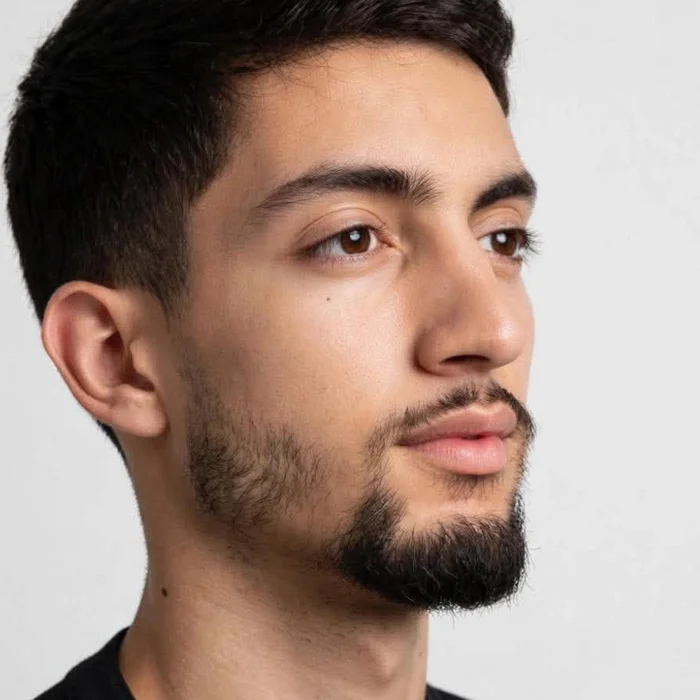

Building AI that cites its sources and solves real constraints

This isn't a resume, LinkedIn has the full version. I'm Fedi, a Tunisian engineering student in my final year of AI and Data Science at ITEAM. I started with IoT and embedded systems, then fell for language models. Since then I've fine-tuned Qwen with LoRA, built RAG assistants that cite their sources, plugged a ChatOps platform into Telegram, taught a model to predict football matches, built an agent that writes cover letters without making things up, and a solver that builds school timetables. I like the whole path, from the dataset to the thing people actually use.
Adapting language models to a domain with LoRA, from dataset preparation to a chatbot people can test.
Assistants that answer from your own documents and show where each answer comes from, backed by vector search.
Cleaning, exploring and modelling real datasets with Random Forest, XGBoost and the usual Python stack.
Microservices, secrets management and monitoring, so AI tools run safely outside the notebook.
Sensors, real-time monitoring and alerts, the background I started from.
Turning messy real-world rules into solvable models with constraint programming, and explaining the result when there is none.
Wind Consulting
Built a secure ChatOps platform that lets engineers manage infrastructure from Telegram: 16 microservices orchestrated with StackStorm, secrets in Vault, Qdrant vector memory with a RAG layer, and Grafana monitoring.
Talan Tunisia
Fine-tuned Qwen2.5-Coder-0.5B with LoRA on software engineering best practices (Java, SOLID, Clean Code, Git, SonarQube) and shipped it as an interactive Gradio chatbot.
ITEAM, Tunisia
Final year. Before that: bachelor's degree in Computer Systems Engineering, IoT & Embedded Systems (2024).
More projects
Got a project, a question about AI, or just want to talk models and data? My inbox is open.